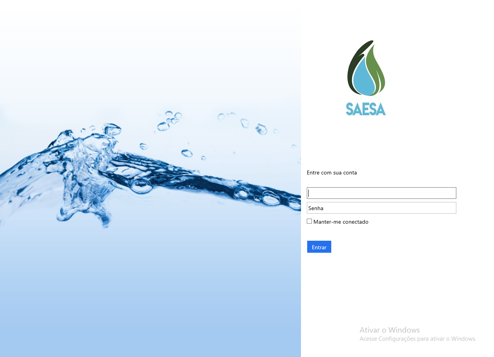

What I'm currently doing:

Software Engineer at Mirasoft
São Caetano do Sul, Brazil. Early 2008 - present
Mirasoft is a software development company focused on customized ERP solutions for Water and Sewerage Corporations. I’m responsible for the architectural software decisions and conversion of critical legacy desktop softwares to newer software stacks.
Below are some screenshots of a business application built on top of a framework that I've developed a couple of years ago. It is fully modular and uses Prism, Unity for IOC and Telerik controls for the UI.Another 6 applications were successfull delivered on top of this framework.
